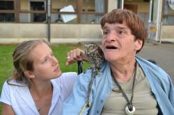

ASBL Ballon d'Oxygène
 Bienvenue et merci de votre visite. Pour toute question, contactez-nous, nous sommes à votre entière disposition
{kind=link}
Qu'est ce que l'ASBL Ballon d'Oxygène ?
L'ASBL Ballon d'Oxygène propose plusieurs types de "répit" en fonction de votre demande :
- accompagnement à domicile pour un répit régulier
- accompagnement à domicile d'urgence 7/7j et 24/24h
- mise en place d'activités sportives et créatives adaptées
- accompagnement durant vos déplacements à l'étranger ou lors de toute activité particulière au cours de laquelle la personne handicapée a besoin de soutien (sport, séjour à l'hôpital ...).
Quels sont nos objectifs ?
Notre objectif premier est de travailler en collaboration avec les familles en respectant autant que possible leur fonctionnement, leurs indications et leurs objectifs.
Nous désirons également vous offrir un service adapté à des handicaps
particuliers tels que l'autisme car nous nous rendons compte que de telles
prestations manquent cruellement dans notre province.
Nous partons du principe selon lequel chaque prise en charge est unique
et particulière, et nous souhaitons apporter un cadre sécurisant à chacun
de nos bénéficiaires.
C'est pourquoi, avant toute prise en charge répit, nous vous demandons
de nous contacter afin de fixer un rendez-vous de prise de contact. (Ce
rendez-vous ne vous engage à rien)
{kind=link}
A qui s'adresse notre service ?
Notre service répit s'adresse à toute personne présentant une difficulté ou un handicap ne lui permettant pas d'être prise en charge par des services non professionnels.
Qui compose notre équipe ?
Dans un premier temps, notre équipe se compose d'une éducatrice spécialisée travaillant sur le terrain et de plusieurs bénévoles s'investissant afin de vous fournir un service flexible, structuré et adapté.
Notre éducatrice, Florence Wouters, a eu l'occasion de travailler tant avec des adultes handicapés physiques qu'avec des jeunes handicapés mentaux et des enfants atteints de toutes sortes de troubles envahissants du développement.
Un des atouts majeurs de Florence est sa grande capacité à prendre en charge des personnes atteintes d'autisme. En effet, durant plusieurs mois au cours de ses études, elle s'est orientée vers ce type de trouble envahissant du développement. Actuellement, elle pratique l'hippothérapie, utilise le PECS et travaille à partir de projets d'accompagnements individualisés.
Notre équipe à des contacts réguliers avec d'autres associations telles que Autisme Liège, l'APEPA et le SAIL afin de vous orienter au mieux lorsque vous avez besoin d'un autre type de soutien et/ou de plus amples informations.